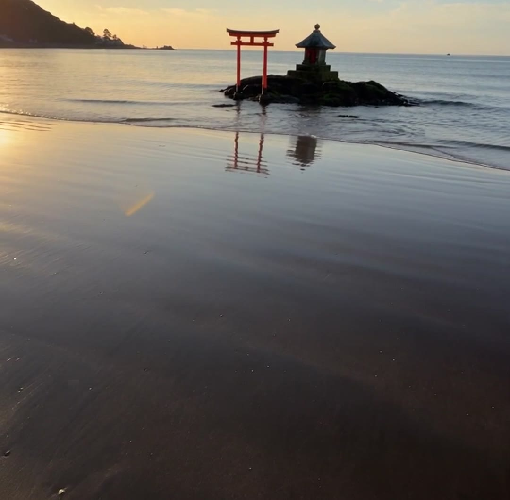
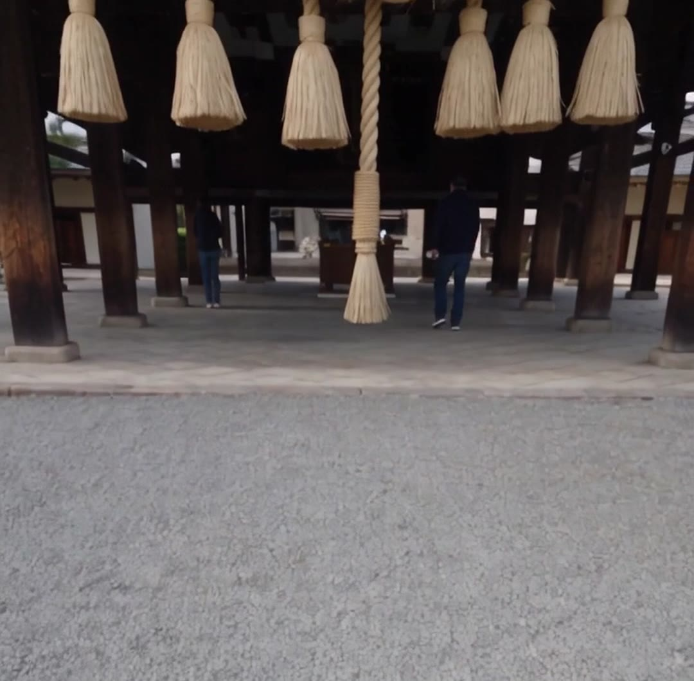
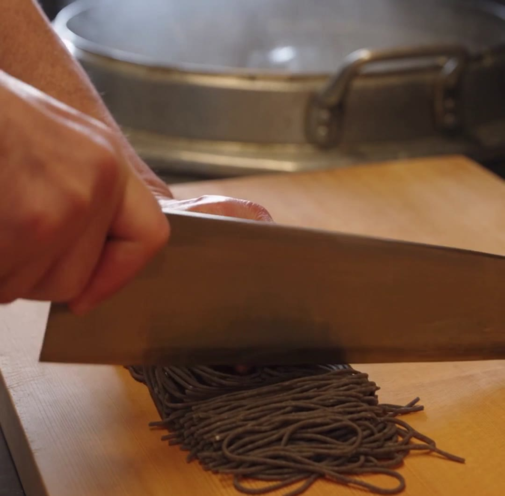
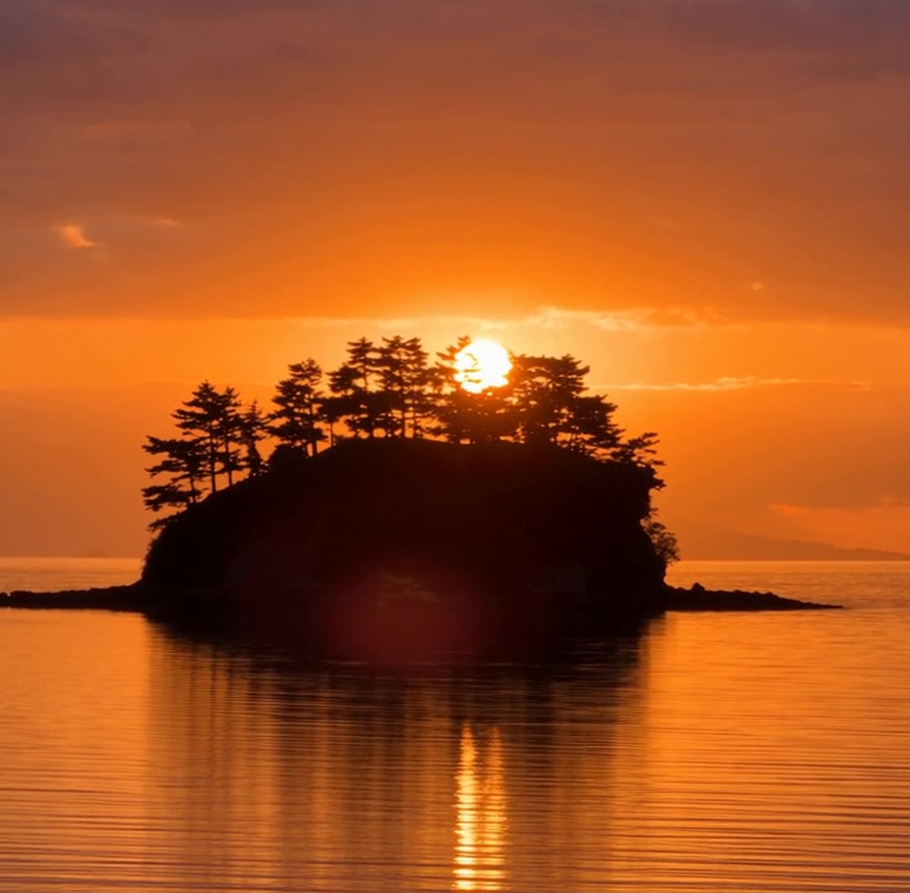
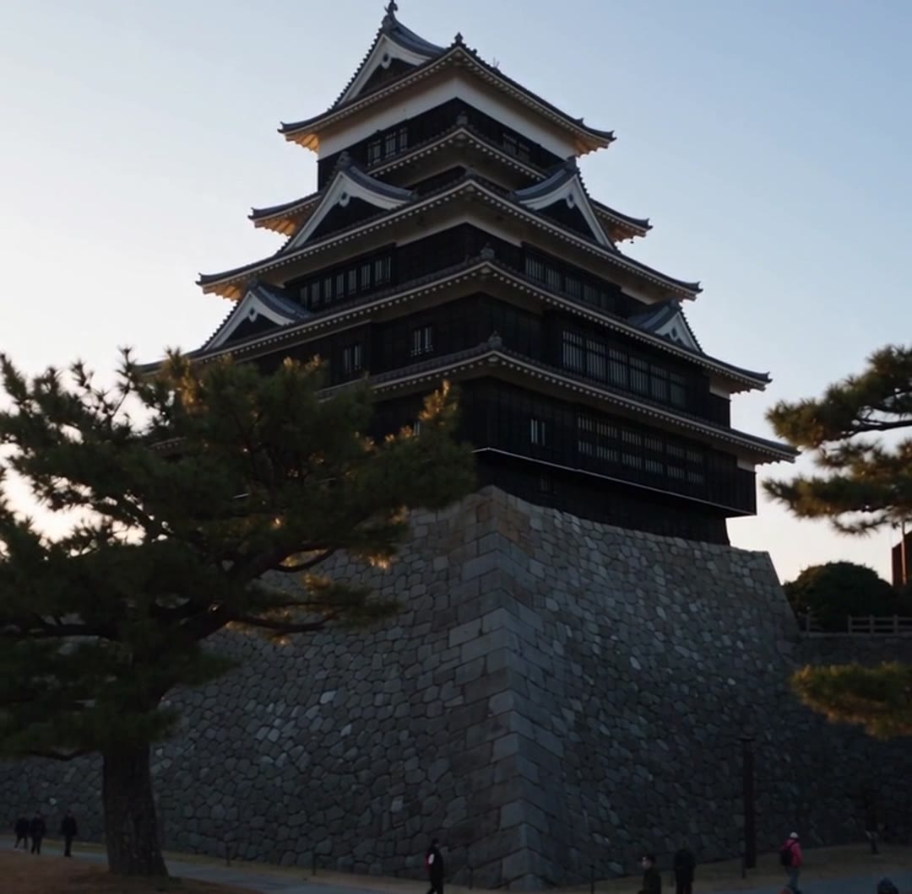
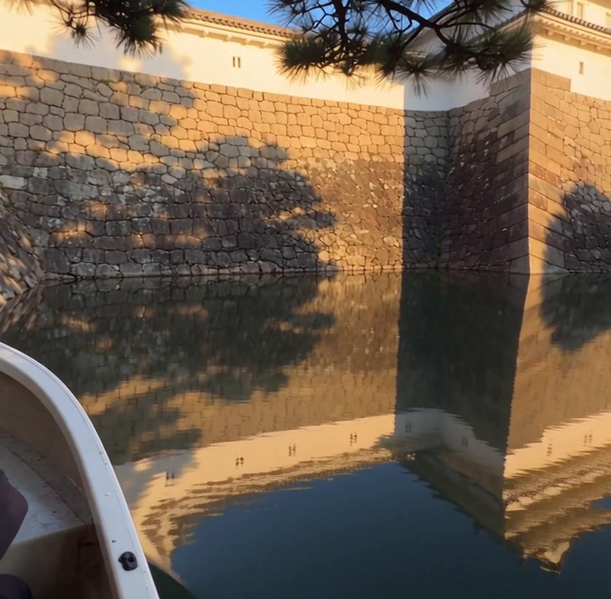
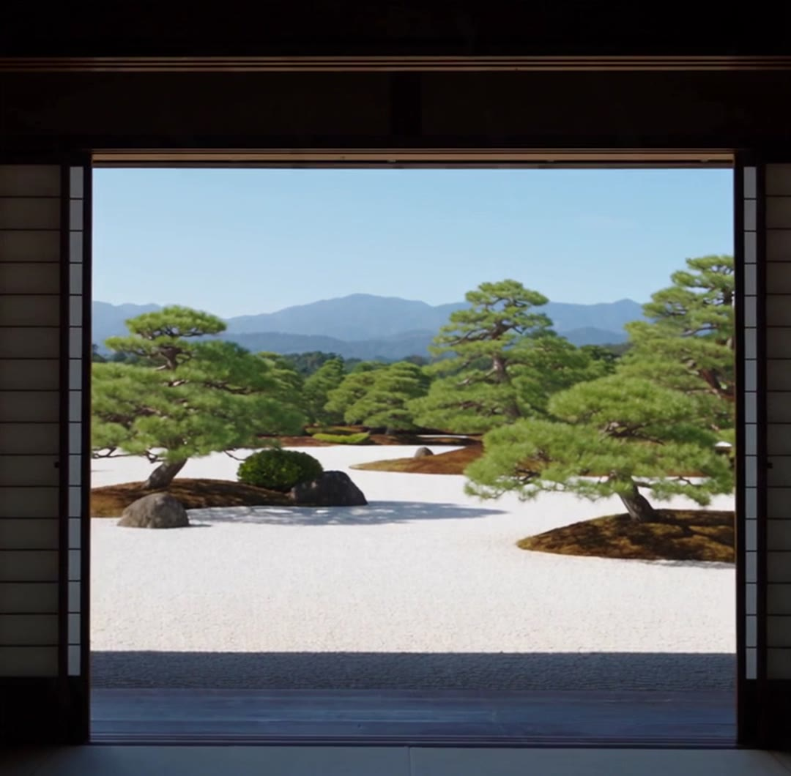

조용하고 깊은 일본을
만나는 곳, 시마네
혼슈 서쪽 끝, 동해를 마주한 시마네. 신들이 모인다는 이즈모타이샤와 물의 도시 마쓰에를 걷는 1박 2일 코스예요.
한눈에 보기
DAY 1 · 이즈모
- 09:00이나사 해변 · 벤텐지마
이즈모타이샤에서 서쪽으로 약 1km, 걸어서 15분. 바위섬 벤텐지마가 서 있는 신화 속 해변이에요. 여기 모래를 담아 가 이즈모타이샤 소가샤에 바치는 풍습이 있어요
- 10:00이즈모타이샤
인연을 이어 주는 신사. 이치바타 전철 이즈모타이샤마에역에서 걸어서 약 7분. 참배는 두 번 절, 네 번 박수, 한 번 절이에요
- 12:00신몬도리 → 와리고 소바
신사 앞 거리에서 3단 둥근 칠기에 담긴 소바에 쯔유를 직접 부어 먹어요
- 오후이치바타 전철로 마쓰에 이동 → 신지호 석양
작은 섬 요메가시마 뒤로 지는 해가 신지호의 대표 풍경이에요




DAY 2 · 마쓰에 · 아다치 미술관
- 09:00마쓰에성
현존 천수 12곳 중 하나이자 국보. 10~3월 8:30~17:00(접수 16:30), 4~9월 ~18:30
- 10:30호리카와 유람선
성을 둘러싼 해자 3.7km를 약 50분 동안 도는 작은 배. 하루 동안 자유롭게 타고 내릴 수 있고, 겨울엔 고타쓰 배가 다녀요
- 13:30아다치 미술관
일본 정원으로 유명한 미술관. JR 야스기역에서 무료 셔틀버스로 약 20분. 성인 2,500엔 · 10~3월 9:00~17:00



🍽️ 맛집 · 이즈모 소바
1780년대 창업, 이즈모 소바 가게 중 가장 오래된 곳으로 알려져 있어요. 와리고 소바 3단 930엔 · 11:00~16:00(소진 시 종료) · 수요일 휴무
좌식 자리가 넓은 노포. 와리고 소바 750엔 · 11:00~15:00(소진 시 종료)
고민가를 고친 가게, 매일 아침 손으로 치는 소바. 와리고 3단 750엔 · 11:30~14:00(L.O.)